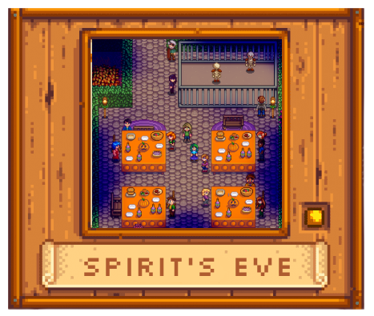
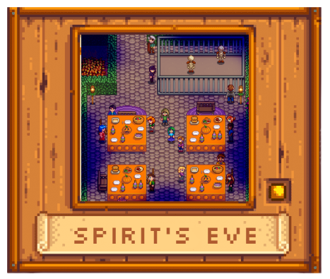

FESTIVALS TABLE SUMMARY
| SEASONS | FESTIVALS | |||
|---|---|---|---|---|
| SPRING | Egg Festival | Desert Festival | Flower Dance | |
| SUMMER | Luau | Trout Derby | Dance of the Moonlight Jellies | |
| FALL | Stardew Valley Fair | Spirit's Eve | ||
| WINTER | Festival of Ice | Squidfest | Night Market | Feast of the Winter Star |
OFFICIAL SOUNDTRACK
Spring (The Valley Comes Alive)
EGG FESTIVAL
The Egg Festival takes place on the 13th of every Spring. The player attends the festival by entering Pelican Town Square between 9am and 2pm. When the festival ends, the player is returned to The Farm at 10pm.
The featured attraction of the Egg Festival is the Egg Hunt, which begins when the player tells Lewis to start. There is a booth set up where the player can purchase a decorative Lawn Flamingo, Plush Bunny, Seasonal Plants, Strawberry Seeds, and other items.
The festival ends after Mayor Lewis announces the winner of the Egg Hunt.
DESERT FESTIVAL
The Desert Festival takes place in the Desert during Spring 15-17, from 10am to 2am. The player does not need to wait for Pam to arrive at the Bus Stop to visit the Desert for the first two days of the festival.
Time passes during the festival. However, villagers will not be at their homes or shops as they will be at the festival.
FLOWER DANCE
The Flower Dance event takes place on the 24th of every Spring. The player attends the dance by entering Cindersap Forest between 9am and 2pm. When the festival ends, the player is returned to The Farm at 10pm.
The festival ends after the dance is performed.
LUAU
The Luau takes place on the 11th of every Summer. The player attends the Luau by entering The Beach between 9am and 2pm. When the Luau ends, the player is returned to The Farm at 10pm.
A central feature of the Luau is the potluck soup. The player and the villagers bring different ingredients to prepare this soup for the Governor, who tastes and judges it. The soup-tasting begins by talking to Mayor Lewis.
The Luau ends automatically after the Governor tastes the soup.

TROUT DERBY
The Trout Derby takes place during Summer 20-21 in Cindersap Forest near the river below Marnie's Ranch. It starts at 6:10am and ends at 2am. Players can catch Rainbow Trout all day long in the Cindersap Forest river. Each Rainbow Trout caught has a chance to give a Golden Tag.
Shops and homes throughout Stardew Valley are not closed on the days of the Trout Derby and time continues to pass during the festival.
DANCE OF THE MOONLIGHT JELLIES
The Dance of the Moonlight Jellies takes place on the 28th of every Summer. The player enters the festival by entering The Beach between 10pm and 12am. When the festival ends, the player is returned to The Farm at 12am.
During the festival, villagers gather at the docks to watch migrating jellyfish who are attracted to the light of a torch that Mayor Lewis lights. Talk to Mayor Lewis to begin the festival.
The festival ends automatically after watching the jellyfish.
STARDEW VALLEY FAIR
The Stardew Valley Fair takes place on the 16th of Fall every year. The player attends the fair by entering Pelican Town between 9am and 3pm, and upon leaving the festival, is returned to The Farm at 10pm.
There are several games where the player can gain Star Tokens, a currency that can be exchanged for prizes at the Shop near the entrance to the Bus Stop.
The Fair also has a Grange Display contest where the player can show the products of the farm and gain Star Tokens. Talking to Mayor Lewis initiates the judging process. Once the items have been judged the player is notified and can return to Mayor Lewis to collect the results. If a player forgets to collect the Grange Display items, they can be found in the lost and found box in the Mayor's Manor.
During the Fair, the player can eat Survival Burgers cooked by Gus north of Pierre's General Store for free.
The festival ends when the player leaves Pelican Town.
 

SPIRIT'S EVE
The Spirit's Eve festival takes place on the 27th of Fall every year. The player enters the festival by entering Pelican Town between 10pm and 11:50pm, and upon leaving the festival, is returned to The Farm at 12am.
Pierre has a shopping booth where the player can purchase festive items including a Rarecrow, Jack-O-Lantern, the Jack-O-Lantern recipe, and other items. The festival features a maze located to the north of Pierre's festive shop. The maze has few dead ends and progresses in a nearly linear fashion. There is no time limit to complete the maze.
The festival ends when the player leaves Pelican Town.
FESTIVAL OF ICE
The Festival of Ice takes place on the 8th of every Winter. The player enters the festival by entering Cindersap Forest between 9am and 2pm. When the festival ends, the player is returned to The Farm at 10pm.
At the festival there are ice sculptures and igloos set up as well as a small shop selling festive decorations. There's also an Ice Fishing Contest the player can take part in. Players are automatically provided with a fishing rod for the duration of the competition.
The festival ends after Lewis announces the winner of the Ice Fishing contest.
SQUIDFEST
The SquidFest takes place during Winter 12-13 on the Beach. It starts at 6:10am and ends at 2am. Players can catch Squid all day long. The counter for the amount of squids caught will reset on the beginning of the 13th.
Shops and homes throughout Stardew Valley are not closed on the days of the SquidFest, and time continues to pass during the festival.
NIGHT MARKET
The Night Market takes place during Winter 15-17, on the Beach, from 5pm-2am. The festival features shops, a mermaid show, and a deep-sea fishing submarine.
Shops and homes throughout Stardew Valley are not closed on the days of the Night Market, and time continues to pass during the festival.
FEAST OF THE WINTER STAR
The Feast of the Winter Star takes place on the 25th of every Winter. The player attends the festival by entering Pelican Town between 9am and 2pm, and upon leaving the festival, is returned to The Farm at 10pm.
The main event of the Feast of the Winter Star is secret gift-giving. The player is assigned a random villager to give a gift to. A week beforehand, on the 18th, Mayor Lewis will send a letter telling the player who their gift recipient is. At the festival, talking to their gift recipient will pop up their inventory to decide what gift to give.
The festival ends when the player leaves Pelican Town.